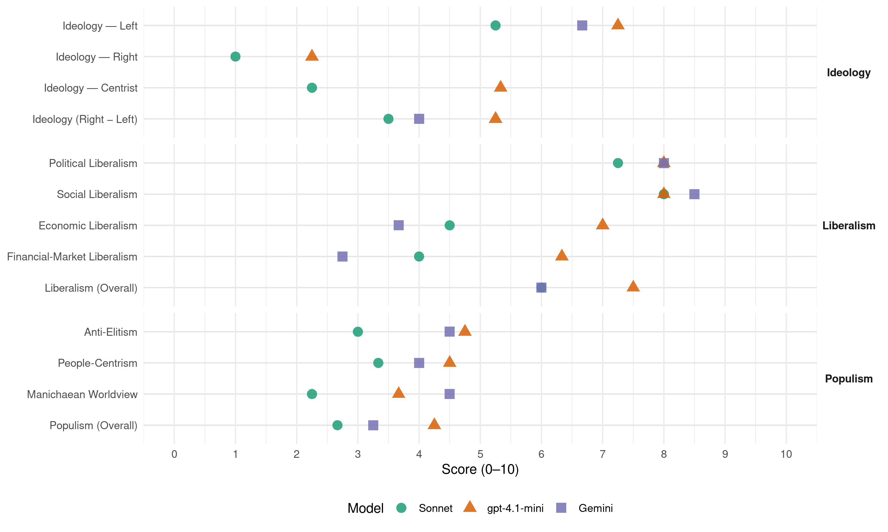

ECOLO (Belgium, 2019)
manifesto_id 21111_201905
Get full text: This site shows derived annotations and short verbatim quotes only. The full manifesto text is © Manifesto Project / WZB — obtain it via manifesto-project.wzb.eu using the manifesto_id above.
Headline scores
| Dimension | Sonnet | gpt-4.1-mini | Gemini |
|---|---|---|---|
| Populism (Overall) | 2.7 | 4.2 | 3.2 |
| Anti-Elitism | 3.0 | 4.8 | 4.5 |
| People-Centrism | 3.3 | 4.5 | 4.0 |
| Manichaean Worldview | 2.2 | 3.7 | 4.5 |
| Ideology (Right − Left) | 3.5 | 5.2 | 4.0 |
| Liberalism (Overall) | 6.0 | 7.5 | 6.0 |
| Political Liberalism | 7.2 | 8.0 | 8.0 |
| Social Liberalism | 8.0 | 8.0 | 8.5 |
| Economic Liberalism | 4.5 | 7.0 | 3.7 |
| Financial-Market Liberalism | 4.0 | 6.3 | 2.8 |
Evidence per dimension
Economic Liberalism
Gemini · score 4.0 · verified · chunk 1
“diminuer les taux de TVA de 21 à 6 %”
Afin de favoriser les économies d’énergie, Ecolo propose de diminuer les taux de TVA de 21 à 6 % notamment pour la construction de maisons passives
Gemini · score 4.0 · mixed · chunk 2
“État régulateur, qui fixe les règles du jeu”
favorise les multinationales , accroît les inégalités et asphyxie les dynamiques locales. Ecolo ne veut pas non plus d’un « État interventionniste », contrôlant l’ensemble des ficelles économiques mais bien d’un État régulateur, qui fixe les règles du jeu, les fait respecter
Gemini · score 4.0 · verified · chunk 3
“rétablir une concurrence loyale”
importés, afin de rétablir une concurrence loyale, de favoriser les circuits économiques
Gemini · score 3.0 · verified · chunk 4
“politique commerciale basée sur le respect des normes”
Ce qui compte, c’est de construire une politique commerciale basée sur le respect des normes sociales et environnementales
gpt-4.1-mini · score 7.0 · verified · chunk 1
“soutenir des investissements massifs et rentables dans l’efficacité énergétique, les énergies renouvelables”
Tous passent par des stratégies d’anticipation et par la mise en place d’une large gamme de mesures coordonnées, destinées à soutenir des investissements massifs et rentables dans l’efficacité énergétique, les énergies renouvelables et la réduction des émissions de gaz à effet de serre.
gpt-4.1-mini · score 7.0 · verified · chunk 2
“L’État doit en ce sens (re)devenir un stratège économique avec une vision économique sur le long terme”
L’État doit en ce sens (re)devenir un stratège économique avec une vision économique sur le long terme et stable qui se concrétise notamment par un plan d’investissement fort et à l’horizon 2030 puis 2050.
gpt-4.1-mini · score 7.0 · verified · chunk 3
“favoriser les placements dans les secteurs économiques innovants et durables”
Orienter les placements des fonds de pension, de façon à favoriser les placements dans les secteurs économiques innovants et « durables » (économie sociale, nouvelles technologies vertes, économies d’énergie,…).
gpt-4.1-mini · score 7.0 · verified · chunk 4
“favoriser la création d’emploi via la diminution de son coût unitaire”
…Il est nécessaire de favoriser la création d’emploi via la diminution de son coût unitaire, mais il faut également améliorer la situation des travailleurs aux bas et moyens revenus…
Sonnet · score 5.0 · mixed · chunk 1
“objectifs contraignants pourront garantir ce développement”
Seuls des objectifs contraignants pourront garantir ce développement. Pour réussir à réduire des émissions de gaz à effet de serre de 55 %
Sonnet · score 5.0 · verified · chunk 2
“État régulateur, qui fixe les règles du jeu”
bien d’un État régulateur, qui fixe les règles du jeu, les fait respecter et joue un rôle d’orientation de l’économie vers un modèle plus soutenable
Sonnet · score 5.0 · mixed · chunk 3
“droits de douane sociaux et environnementaux au niveau européen”
Ecolo propose l’instauration de droits de douane sociaux et environnementaux au niveau européen à l’égard des biens et services produits dans des conditions sociales et environnementales problématiques
Sonnet · score 4.0 · verified · chunk 4
“taxe européenne sur les Gafa”
Un renforcement progressif mais conséquent pourrait être alimenté par la prochaine taxe européenne sur les Gafa
Financial-Market Liberalism
Gemini · score 3.0 · verified · chunk 1
“désinvestir du secteur des énergies fossiles”
Rendre obligatoire la sortie progressive des investissements dans le secteur des énergies fossiles. Les fonds de pension publics doivent désinvestir du secteur des énergies fossiles.
Gemini · score 3.0 · verified · chunk 2
“potentiel destructeur d’une dérégulation généralisée des marchés”
crise économique et sociale, elle a également mis en lumière le potentiel destructeur d’une dérégulation généralisée des marchés. Aujourd’hui, si des mesures ont permis
Gemini · score 3.0 · verified · chunk 3
“séparant de façon stricte les métiers bancaires”
Renforcer les mesures de régulation financière, en séparant de façon stricte les métiers bancaires, en interdisant
Gemini · score 2.0 · verified · chunk 4
“assurances-pension privées, coûteuses et qui participent de la spéculation financière”
gouvernements ont fait largement la promotion des assurances-pension privées, coûteuses et qui participent de la spéculation financière.
gpt-4.1-mini · score 6.0 · verified · chunk 1
“mobiliser les acteurs financiers (les pouvoirs publics via un financement direct ou de la garantie, l’épargne citoyenne, le privé)”
Il est important de mobiliser les acteurs financiers (les pouvoirs publics via un financement direct ou de la garantie, l’épargne citoyenne, le privé,…) pour mettre en place une solution de financement rapide et adapté pour ces initiatives.
gpt-4.1-mini · score 6.0 · verified · chunk 2
“la crise financière a exposé au grand jour les dérives d’un système financier livré à lui-même”
La crise financière a exposé au grand jour les dérives d’un système financier livré à lui-même. En dégénérant en crise économique et sociale, elle a également mis en lumière le potentiel destructeur d’une dérégulation généralisée des marchés.
gpt-4.1-mini · score 7.0 · verified · chunk 3
“renforcer les mesures de régulation financière, en séparant de façon stricte les métiers bancaires”
Renforcer les mesures de régulation financière, en séparant de façon stricte les métiers bancaires, en interdisant les pratiques spéculatives, en améliorant leur transparence, et en favorisant l’émergence de banques plus petites, spécialisées et éthiques.
Sonnet · score 5.0 · verified · chunk 1
“désinvestir du secteur des énergies fossiles”
Les fonds de pension publics doivent désinvestir du secteur des énergies fossiles. Pour éviter un effet de déstabilisation des marchés, ils doivent pouvoir le faire de façon progressive
Sonnet · score 4.0 · verified · chunk 2
“dérégulation généralisée des marchés”
elle a également mis en lumière le potentiel destructeur d’une dérégulation généralisée des marchés. Aujourd’hui, si des mesures ont permis certaines améliorations
Sonnet · score 3.0 · verified · chunk 3
“séparation stricte entre banques de détail et banques d’investissement”
Celui-ci devra viser l’établissement d’une séparation stricte entre banques de détail et banques d’investissement, en contraignant les banques universelles à opter pour le statut, soit d’une banque de détail, soit d’une banque d’investissement.
Sonnet · score 4.0 · verified · chunk 4
“fonds vautours”
Exporter le modèle belge de loi sur les fonds vautours, de manière à empêcher ceux-ci de réclamer des profits indus
Political Liberalism
Gemini · score 8.0 · verified · chunk 1
“Inscrire le bien-être et la dignité des animaux en tant qu’êtres sentients (sensibles) dansConstitution”
3.12 Inscrire le bien-être et la dignité des animaux en tant qu’êtres sentients (sensibles) dansConstitution. Inscrire dans la Constitution le droit de l’animal
Gemini · score 8.0 · verified · chunk 2
“refondation de la démocratie autour de la participation citoyenne”
nécessité. D’une part, celle d’une refondation de la démocratie autour de la participation citoyenne. D’autre part, celle d’un assainissement profond
Gemini · score 8.0 · verified · chunk 3
“inacceptable dans un pays démocratique”
Les centres fermés sont un dispositif inacceptable dans un pays démocratique fermés dans la mesure
Gemini · score 8.0 · verified · chunk 4
“l’accès à la Justice constitue un pilier de notre démocratie”
problèmes d’accès à la Justice se sont aggravés. Or, l’accès à la Justice constitue un pilier de notre démocratie et une condition
gpt-4.1-mini · score 8.0 · verified · chunk 1
“La Loi visera à réaffirmer la place centrale que doit occuper l’énergie au sein des politiques publiques”
La Loi visera à réaffirmer la place centrale que doit occuper l’énergie au sein des politiques publiques. Ainsi, l’efficacité énergétique et la transition vers une consommation énergétique durable doivent être comprises comme des mesures transversales.
gpt-4.1-mini · score 8.0 · verified · chunk 2
“transparence des mandats, des rémunérations, le fonctionnement et le contrôle démocratique”
Grâce à l’opinion publique, Ecolo a pu faire levier et faire adopter des réformes importantes en matière de gouvernance : la transparence des mandats, des rémunérations, le fonctionnement et le contrôle démocratique des intercommunales et autres associations ou structures para-publiques, etc.
gpt-4.1-mini · score 8.0 · verified · chunk 3
“lutte contre la fraude fiscale en renforçant les différents services du SPF”
Lutter réellement contre la fraude fiscale en renforçant les différents services du SPF, les dispositifs policiers et judiciaires et les mesures de sanction.
gpt-4.1-mini · score 8.0 · verified · chunk 4
“l’accès à la Justice constitue un pilier de notre démocratie”
…Or, l’accès à la Justice constitue un pilier de notre démocratie et une condition sine qua non d’une société juste. Pourtant, actuellement le droit à un accès effectif au juge n’est plus garanti pour une partie de la population…
Sonnet · score 7.0 · verified · chunk 1
“Un conseil climatique indépendant devra analyser”
Un conseil climatique indépendant devra analyser de manière régulière si l’accord de gouvernement se traduit par une politique efficace
Sonnet · score 8.0 · verified · chunk 2
“droit d’Initiative législative citoyenne”
Créer un droit d’Initiative législative citoyenne qui permette à des citoyen.nes d’obtenir d’une assemblée parlementaire que celle-ci vote sur des propositions législatives
Sonnet · score 7.0 · verified · chunk 3
“centres fermés sont un dispositif inacceptable dans un pays démocratique”
Les centres fermés sont un dispositif inacceptable dans un pays démocratique fermés dans la mesure où ils relèvent d’une politique assimilant des personnes migrantes à des criminels en les enfermant pour des raisons administratives.
Sonnet · score 7.0 · verified · chunk 4
“l’accès à la Justice constitue un pilier de notre démocratie”
Or, l’accès à la Justice constitue un pilier de notre démocratie et une condition sine qua non d’une société juste
Liberalism (Overall)
Gemini · score 6.0 · verified · chunk 1
“diminuer les taux de TVA de 21 à 6 %”
Afin de favoriser les économies d’énergie, Ecolo propose de diminuer les taux de TVA de 21 à 6 % notamment pour la construction de maisons passives
Gemini · score 6.0 · verified · chunk 2
“refondation de la démocratie autour de la participation citoyenne”
nécessité. D’une part, celle d’une refondation de la démocratie autour de la participation citoyenne. D’autre part, celle d’un assainissement profond
Gemini · score 6.0 · verified · chunk 3
“Garantir l’effectivité des lois anti-discrimination”
9.9 Garantir l’effectivité des lois anti-discrimination par l’organisation de tests de situation
Gemini · score 6.0 · verified · chunk 4
“l’accès à la Justice constitue un pilier de notre démocratie”
problèmes d’accès à la Justice se sont aggravés. Or, l’accès à la Justice constitue un pilier de notre démocratie et une condition
gpt-4.1-mini · score 7.0 · verified · chunk 1
“La Loi visera à réaffirmer la place centrale que doit occuper l’énergie au sein des politiques publiques”
La Loi visera à réaffirmer la place centrale que doit occuper l’énergie au sein des politiques publiques. Ainsi, l’efficacité énergétique et la transition vers une consommation énergétique durable doivent être comprises comme des mesures transversales.
gpt-4.1-mini · score 7.0 · verified · chunk 2
“réformes importantes en matière de gouvernance : la transparence des mandats, des rémunérations”
Grâce à l’opinion publique, Ecolo a pu faire levier et faire adopter des réformes importantes en matière de gouvernance : la transparence des mandats, des rémunérations, le fonctionnement et le contrôle démocratique des intercommunales et autres associations ou structures para-publiques, etc.
gpt-4.1-mini · score 8.0 · verified · chunk 3
“lutter réellement contre la fraude fiscale en renforçant les différents services du SPF”
Lutter réellement contre la fraude fiscale en renforçant les différents services du SPF, les dispositifs policiers et judiciaires et les mesures de sanction.
gpt-4.1-mini · score 8.0 · verified · chunk 4
“l’accès à la Justice constitue un pilier de notre démocratie”
…Or, l’accès à la Justice constitue un pilier de notre démocratie et une condition sine qua non d’une société juste. Pourtant, actuellement le droit à un accès effectif au juge n’est plus garanti pour une partie de la population…
Sonnet · score 6.0 · verified · chunk 1
“Un conseil climatique indépendant devra analyser”
Un conseil climatique indépendant devra analyser de manière régulière si l’accord de gouvernement se traduit par une politique efficace
Sonnet · score 6.0 · verified · chunk 2
“transparence, renforcer la participation”
il faut oser la transparence, renforcer la participation , élargir les modes de décision aux citoyens et, plus que jamais, améliorer la gouvernance
Sonnet · score 6.0 · verified · chunk 3
“Garantir l’effectivité des lois anti-discrimination”
Garantir l’effectivité des lois anti-discrimination par l’organisation de tests de situation, par la formation des services de prévention et de police amenés à accueillir les plaignants.
Sonnet · score 6.0 · verified · chunk 4
“l’accès à la Justice constitue un pilier de notre démocratie”
Or, l’accès à la Justice constitue un pilier de notre démocratie et une condition sine qua non d’une société juste
Anti-Elitism
Gemini · score 5.0 · verified · chunk 1
“les profits du secteur nucléaire sont largement privatisés”
Aujourd’hui les profits du secteur nucléaire sont largement privatisés, alors que les coûts en cas d’accident nucléaire pèseraient largement sur la collectivité.
Gemini · score 7.0 · verified · chunk 2
“impliquant à des degrés divers des représentants des partis traditionnels”
révélé au grand jour une série de scandales (Publifin, ISPPC, Samusocial, Kazakhgate, etc.) , impliquant à des degrés divers des représentants des partis traditionnels. Ces dossiers d’une gravité extrême sapent la confiance
Gemini · score 3.0 · verified · chunk 3
“loin de tous les fantasmes entretenus par les nationalistes-populistes”
politique migratoire digne et solidaire, pragmatique et loin de tous les fantasmes entretenus par les nationalistes-populistes.
Gemini · score 3.0 · verified · chunk 4
“ferme les yeux sur les méfaits des puissants”
qui maltraite les plus faibles et ferme les yeux sur les méfaits des puissants.
gpt-4.1-mini · score 2.0 · verified · chunk 1
“la logique doit être inversée”
Aujourd’hui les profits du secteur nucléaire sont largement privatisés, alors que les coûts en cas d’accident nucléaire pèseraient largement sur la collectivité. La logique doit être inversée5. Pour Ecolo, le secteur nucléaire devrait être soumis à une responsabilité civile illimitée, comme c’est le cas pour les autres producteurs d’énergie, qu’ils utilisent le gaz ou le vent, et comme c’est le cas pour les producteurs d’énergie nucléaire en Allemagne.
gpt-4.1-mini · score 7.0 · verified · chunk 2
“une série de scandales (Publifin, ISPPC, Samusocial, Kazakhgate, etc.)”
Tout au long de la législature et à tous les étages de la maisons « Belgique », l’actualité a révélé au grand jour une série de scandales (Publifin, ISPPC, Samusocial, Kazakhgate, etc.) , impliquant à des degrés divers des représentants des partis traditionnels. Ces dossiers d’une gravité extrême sapent la confiance des citoyens dans leurs institutions et dans leurs représentants et illustrent de façon dramatique une double nécessité.
gpt-4.1-mini · score 7.0 · verified · chunk 3
“fraude fiscale représente un manque à gagner”
La Belgique est l’un des pays d’Europe où la fraude fiscale en part du PIB est la plus élevée. Même si ce montant est, par définition, difficile à évaluer, plusieurs études sur le sujet arrivent à cette conclusion. Ainsi, selon différentes études universitaires ou évaluations internationales, la fraude fiscale représente un manque à gagner de près de 20 milliards € par an pour les finances publiques.
gpt-4.1-mini · score 3.0 · verified · chunk 4
“la montée en flèche des courants nationaux-populistes qui témoignent de leur mépris”
…plus égalitaire, plus social, plus solidaire et plus démocratique. Malheureusement, nous assistons, en même temps, à la montée en flèche des courants nationaux-populistes qui témoignent de leur mépris pour les enjeux contemporains, notamment environnementaux et migratoires. Les défis à venir sont importants…
Sonnet · score 2.0 · verified · chunk 1
“les profits du secteur nucléaire sont largement privatisés”
Aujourd’hui les profits du secteur nucléaire sont largement privatisés, alors que les coûts en cas d’accident nucléaire pèseraient largement sur la collectivité.
Sonnet · score 4.0 · verified · chunk 2
“scandales (Publifin, ISPPC, Samusocial, Kazakhgate”
l’actualité a révélé au grand jour une série de scandales (Publifin, ISPPC, Samusocial, Kazakhgate, etc.) , impliquant à des degrés divers des représentants des partis traditionnels
Sonnet · score 4.0 · mixed · chunk 3
“revenus de la dette se concentrent dans les mains des détenteurs des capitaux”
Les intérêts sur la dette publique engendrent une société duale dans laquelle les revenus de la dette se concentrent dans les mains des détenteurs des capitaux et des actionnaires des banques alors que le paiement des intérêts repose sur les contribuables.
Sonnet · score 4.0 · mixed · chunk 4
“ferme les yeux sur les méfaits des puissants”
donner cette détestable image d’une justice qui maltraite les plus faibles et ferme les yeux sur les méfaits des puissants
Ideology — Centrist
gpt-4.1-mini · score 4.0 · verified · chunk 1
“citoyens, des entreprises et des associations les partenaires privilégiés”
Bâtir une Alliance Emploi Environnement « isolation » faisant des citoyens, des entreprises et des associations les partenaires privilégiés afin de généraliser l’isolation des maisons et bâtiments et la création d’emplois verts qui y sont liés.
gpt-4.1-mini · score 6.0 · verified · chunk 2
“le citoyen retrouve sa place d’acteur fondamental”
Pour lutter contre le sentiment d’impuissance en matière d’affaires publiques, il faut oser la transparence, renforcer la participation , élargir les modes de décision aux citoyens et, plus que jamais, améliorer la gouvernance. C’est la seule voie pour redonner confiance dans nos institutions.
gpt-4.1-mini · score 6.0 · verified · chunk 3
“transfert net des contribuables vers les détenteurs de la dette publique”
Les intérêts sur la dette publique engendrent une société duale dans laquelle les revenus de la dette se concentrent dans les mains des détenteurs des capitaux et des actionnaires des banques alors que le paiement des intérêts repose sur les contribuables. Il y a un transfert net des contribuables vers les détenteurs de la dette publique.
Sonnet · score 2.0 · verified · chunk 1
“faisant des citoyens, des entreprises et des associations”
Bâtir une Alliance Emploi Environnement « isolation » faisant des citoyens, des entreprises et des associations les partenaires privilégiés
Sonnet · score 3.0 · verified · chunk 2
“le citoyen retrouve sa place d’acteur fondamental”
en proposant des alternatives où le citoyen retrouve sa place d’acteur fondamental. Pour lutter contre le sentiment d’impuissance en matière d’affaires publiques
Sonnet · score 2.0 · verified · chunk 3
“nationalistes-populistes”
Ecolo est clairement du côté ouvert et veut par son approche de la question migratoire tout faire pour assurer une politique migratoire digne et solidaire, pragmatique et loin de tous les fantasmes entretenus par les nationalistes-populistes.
Sonnet · score 2.0 · verified · chunk 4
“impliquer davantage le public”
Ecolo entend impliquer davantage le public dans les grandes orientations de la RTBF
Ideology — Left
Gemini · score 6.0 · verified · chunk 1
“les profits du secteur nucléaire sont largement privatisés”
Aujourd’hui les profits du secteur nucléaire sont largement privatisés, alors que les coûts en cas d’accident nucléaire pèseraient largement sur la collectivité.
Gemini · score 7.0 · verified · chunk 2
“alléger la pression fiscale sur le travail”
Ecolo propose donc d’alléger la pression fiscale sur le travail, particulièrement le travail peu qualifié, en supprimant les cotisations socialement injustes
Gemini · score 7.0 · verified · chunk 4
“une allure néolibérale, alors que les inégalités s’accroissent”
rouages économiques et tentant d’imposer à la marche du monde une allure néolibérale, alors que les inégalités s’accroissent.
gpt-4.1-mini · score 7.0 · verified · chunk 1
“Désinvestir des énergies fossiles : en priorité par une réorientation rapide de l’ensemble des fonds de pension publics vers des investissements durables”
1.13 Désinvestir des énergies fossiles : en priorité par une réorientation rapide de l’ensemble des fonds de pension publics vers des investissements durables, une incitation des autres fonds de pension à faire de même, et un reporting public des fonds d’investissement cotés en Bourse.
gpt-4.1-mini · score 7.0 · verified · chunk 2
“la justice sociale, d’organisation des soins à partir de la 1ère ligne”
Des politiques de prévention, de justice sociale, d’organisation des soins à partir de la 1ère ligne, de régulation ferme des prix des médicaments et des rémunérations des prestataires permettront de maîtriser les budgets.
gpt-4.1-mini · score 8.0 · verified · chunk 3
“cotisation de crise sur les patrimoines supérieurs à 1 million €”
Ecolo propose d’instaurer une cotisation de crise sur les patrimoines supérieurs à 1 million €, qui seraient taxés à hauteur de 1% à 1,5%, avec une exonération dans la base de calcul de l’habitation principale ainsi que des biens productifs utilisés dans le cadre d’une activité professionnelle.
gpt-4.1-mini · score 7.0 · verified · chunk 4
“un autre modèle économique, social et politique plus égalitaire, plus social, plus solidaire”
…témoignent aujourd’hui de la volonté des différentes sociétés civiles de mettre en place un autre modèle économique, social et politique plus égalitaire, plus social, plus solidaire et plus démocratique. Malheureusement, nous assistons, en même temps, à la montée en flèche des courants nationaux-populistes…
Sonnet · score 5.0 · verified · chunk 1
“solidarité du financement”
L’accès aux soins de santé pour toutes et tous nécessite de préserver la solidarité du financement. Cette solidarité nécessite des politiques de cotisations sociales et fiscales justes
Sonnet · score 5.0 · verified · chunk 2
“juste répartition de la valeur créée”
qui assure une juste répartition de la valeur créée afin de permettre à chacun de développer son projet de manière autonome et émancipatrice
Sonnet · score 5.0 · verified · chunk 3
“globalisation des revenus d’un point de vue fiscal”
La globalisation des revenus d’un point de vue fiscal permettra de rééquilibrer l’imposition entre les revenus du travail et du capital pour qu’un euro de salaire ne soit pas plus imposé qu’un euro de revenu financier
Sonnet · score 6.0 · verified · chunk 4
“augmenter les allocations sociales minimales”
Il est donc urgent d’augmenter les allocations sociales minimales au seuil de risque de pauvreté afin d’enrayer la spirale de la pauvreté
Ideology (Right − Left)
Gemini · score 5.0 · verified · chunk 1
“les profits du secteur nucléaire sont largement privatisés”
Aujourd’hui les profits du secteur nucléaire sont largement privatisés, alors que les coûts en cas d’accident nucléaire pèseraient largement sur la collectivité.
Gemini · score 6.0 · verified · chunk 2
“alléger la pression fiscale sur le travail”
Ecolo propose donc d’alléger la pression fiscale sur le travail, particulièrement le travail peu qualifié, en supprimant les cotisations socialement injustes
Gemini · score 0.0 · verified · chunk 3
“loin de tous les fantasmes entretenus par les nationalistes-populistes”
politique migratoire digne et solidaire, pragmatique et loin de tous les fantasmes entretenus par les nationalistes-populistes.
Gemini · score 5.0 · verified · chunk 4
“une allure néolibérale, alors que les inégalités s’accroissent”
rouages économiques et tentant d’imposer à la marche du monde une allure néolibérale, alors que les inégalités s’accroissent.
gpt-4.1-mini · score 5.0 · verified · chunk 1
“Désinvestir des énergies fossiles : en priorité par une réorientation rapide de l’ensemble des fonds de pension publics vers des investissements durables”
1.13 Désinvestir des énergies fossiles : en priorité par une réorientation rapide de l’ensemble des fonds de pension publics vers des investissements durables, une incitation des autres fonds de pension à faire de même, et un reporting public des fonds d’investissement cotés en Bourse.
gpt-4.1-mini · score 6.0 · verified · chunk 2
“une série de scandales (Publifin, ISPPC, Samusocial, Kazakhgate, etc.)”
Tout au long de la législature et à tous les étages de la maisons « Belgique », l’actualité a révélé au grand jour une série de scandales (Publifin, ISPPC, Samusocial, Kazakhgate, etc.) , impliquant à des degrés divers des représentants des partis traditionnels. Ces dossiers d’une gravité extrême sapent la confiance des citoyens dans leurs institutions et dans leurs représentants et illustrent de façon dramatique une double nécessité.
gpt-4.1-mini · score 6.0 · verified · chunk 3
“cotisation de crise sur les patrimoines supérieurs à 1 million €”
Ecolo propose d’instaurer une cotisation de crise sur les patrimoines supérieurs à 1 million €, qui seraient taxés à hauteur de 1% à 1,5%, avec une exonération dans la base de calcul de l’habitation principale ainsi que des biens productifs utilisés dans le cadre d’une activité professionnelle.
gpt-4.1-mini · score 4.0 · verified · chunk 4
“la montée en flèche des courants nationaux-populistes qui témoignent de leur mépris”
…plus égalitaire, plus social, plus solidaire et plus démocratique. Malheureusement, nous assistons, en même temps, à la montée en flèche des courants nationaux-populistes qui témoignent de leur mépris pour les enjeux contemporains, notamment environnementaux et migratoires. Les défis à venir sont importants…
Sonnet · score 3.0 · verified · chunk 1
“solidarité du financement”
L’accès aux soins de santé pour toutes et tous nécessite de préserver la solidarité du financement. Cette solidarité nécessite des politiques de cotisations sociales et fiscales justes
Sonnet · score 3.0 · verified · chunk 2
“juste répartition de la valeur créée”
qui assure une juste répartition de la valeur créée afin de permettre à chacun de développer son projet de manière autonome et émancipatrice
Sonnet · score 3.0 · verified · chunk 3
“lutter contre le dumping social et environnemental”
L’objectif poursuivi vise à lutter contre le dumping social et environnemental qui, tout en portant préjudice à la compétitivité de nos entreprises, bafoue les droits des travailleurs
Sonnet · score 5.0 · verified · chunk 4
“augmenter les allocations sociales minimales”
Il est donc urgent d’augmenter les allocations sociales minimales au seuil de risque de pauvreté afin d’enrayer la spirale de la pauvreté
Ideology — Right
gpt-4.1-mini · score 1.0 · verified · chunk 1
“éviter le recours à l’importation d’huile de soja ou de palme pour les agrocarburants”
Bâtir une Alliance Emploi Environnement «énergies renouvelables» faisant des citoyens, des entreprises et des associations les partenaires privilégiés afin de soutenir le développement accéléré des énergies renouvelables (en excluant le recours à l’importation d’huile de soja ou de palme pour les agrocarburants) et la création d’emplois verts qui y sont liés.
gpt-4.1-mini · score 3.0 · verified · chunk 2
“la mise en valeur de ses spécificités et sa prise d’autonomie vis-à-vis des deux grandes communautés”
Quant à la Région bruxelloise, la mise en valeur de ses spécificités et sa prise d’autonomie vis-à-vis des deux grandes communautés de ce pays rendent obsolète le fait que les listes pour les élections régionales sont unilingues, ce qui n’est pas le cas pour les élections communales ou fédérales.
gpt-4.1-mini · score 3.0 · verified · chunk 3
“lutte contre le dumping social et environnemental”
L’objectif poursuivi vise à lutter contre le dumping social et environnemental qui, tout en portant préjudice à la compétitivité de nos entreprises, bafoue les droits des travailleurs et épuise les ressources de certains pays qui exportent vers l’Europe.
gpt-4.1-mini · score 2.0 · verified · chunk 4
“la montée en flèche des courants nationaux-populistes qui témoignent de leur mépris”
…plus égalitaire, plus social, plus solidaire et plus démocratique. Malheureusement, nous assistons, en même temps, à la montée en flèche des courants nationaux-populistes qui témoignent de leur mépris pour les enjeux contemporains, notamment environnementaux et migratoires. Les défis à venir sont importants…
Sonnet · score 1.0 · verified · chunk 2
“résider en Belgique”
Les officines et les consommateurs seront soumis au respect de règles strictes : pas avant 18 ans, résider en Belgique, pas de pub, ne pas fumer dans les espaces publics
Sonnet · score 1.0 · verified · chunk 3
“En aucun cas, il ne s’agit d’instaurer un protectionnisme aveugle”
En aucun cas, il ne s’agit d’instaurer un protectionnisme aveugle. L’objectif poursuivi vise à lutter contre le dumping social et environnemental
Sonnet · score 1.0 · verified · chunk 4
“montée en flèche des courants nationaux-populistes”
nous assistons, en même temps, à la montée en flèche des courants nationaux-populistes qui témoignent de leur mépris pour les enjeux contemporains
Manichaean Worldview
Gemini · score 5.0 · verified · chunk 2
“sapent la confiance des citoyens dans leurs institutions”
représentants des partis traditionnels. Ces dossiers d’une gravité extrême sapent la confiance des citoyens dans leurs institutions et dans leurs représentants
Gemini · score 4.0 · verified · chunk 4
“La guerre ouverte menée contre les artistes”
priorité culturelle d’Ecolo. La guerre ouverte menée contre les artistes qui ne représentent pourtant
gpt-4.1-mini · score 2.0 · verified · chunk 1
“profits du secteur nucléaire sont largement privatisés, alors que les coûts en cas d’accident nucléaire pèseraient largement sur la collectivité”
Aujourd’hui les profits du secteur nucléaire sont largement privatisés, alors que les coûts en cas d’accident nucléaire pèseraient largement sur la collectivité. La logique doit être inversée5.
gpt-4.1-mini · score 5.0 · mixed · chunk 2
“une série de scandales (Publifin, ISPPC, Samusocial, Kazakhgate, etc.)”
Tout au long de la législature et à tous les étages de la maisons « Belgique », l’actualité a révélé au grand jour une série de scandales (Publifin, ISPPC, Samusocial, Kazakhgate, etc.) , impliquant à des degrés divers des représentants des partis traditionnels. Ces dossiers d’une gravité extrême sapent la confiance des citoyens dans leurs institutions et dans leurs représentants et illustrent de façon dramatique une double nécessité.
gpt-4.1-mini · score 6.0 · verified · chunk 3
“fraude fiscale n’est pas une fatalité, des solutions existent”
Pourtant, contrairement à ce qu’on pense parfois, la fraude fiscale n’est pas une fatalité, des solutions existent pour la combattre et il suffit de les mettre en œuvre.
gpt-4.1-mini · score 3.0 · verified · chunk 4
“une petite minorité contrôlant l’ensemble des rouages économiques”
…un double basculement est survenu au sein des relations internationales. D’une part, de plus en plus d’États concourent à l’ordre international et intègrent les instances de décision… D’autre part, ce renversement du système unipolaire s’est réalisé autour d’une petite minorité contrôlant l’ensemble des rouages économiques et tentant d’imposer à la marche du monde une allure néolibérale…
Sonnet · score 1.0 · verified · chunk 1
“s’affranchir du lobby pharmaceutique”
à condition de s’affranchir du lobby pharmaceutique. Or, le budget destiné aux médicaments dérape (500 millions € en 2018)
Sonnet · score 3.0 · verified · chunk 2
“sapent la confiance des citoyens dans leurs institutions”
Ces dossiers d’une gravité extrême sapent la confiance des citoyens dans leurs institutions et dans leurs représentants et illustrent de façon dramatique une double nécessité
Sonnet · score 3.0 · verified · chunk 3
“partis populistes, souvent dans des régions prospères”
Les partis populistes, souvent dans des régions prospères, ont mis l’accent sur la question identitaire et ont généré les fantasmes du « grand remplacement »
Sonnet · score 2.0 · verified · chunk 4
“maltraite les plus faibles et ferme les yeux”
détestable image d’une justice qui maltraite les plus faibles et ferme les yeux sur les méfaits des puissants
People-Centrism
Gemini · score 6.0 · verified · chunk 2
“le citoyen retrouve sa place d’acteur fondamental”
réinventer la démocratie , en proposant des alternatives où le citoyen retrouve sa place d’acteur fondamental. Pour lutter contre le sentiment d’impuissance
Gemini · score 2.0 · verified · chunk 4
“l’ouverture de la RTBF à son public”
première étape, utile, mais non suffisante, à l’ouverture de la RTBF à son public.
gpt-4.1-mini · score 3.0 · verified · chunk 1
“citoyens, des entreprises et des associations les partenaires privilégiés”
Bâtir une Alliance Emploi Environnement « isolation » faisant des citoyens, des entreprises et des associations les partenaires privilégiés afin de généraliser l’isolation des maisons et bâtiments et la création d’emplois verts qui y sont liés.
gpt-4.1-mini · score 6.0 · verified · chunk 2
“le citoyen retrouve sa place d’acteur fondamental”
Pour lutter contre le sentiment d’impuissance en matière d’affaires publiques, il faut oser la transparence, renforcer la participation , élargir les modes de décision aux citoyens et, plus que jamais, améliorer la gouvernance. C’est la seule voie pour redonner confiance dans nos institutions.
gpt-4.1-mini · score 5.0 · verified · chunk 3
“les contribuables vers les détenteurs de la dette publique”
Les intérêts sur la dette publique engendrent une société duale dans laquelle les revenus de la dette se concentrent dans les mains des détenteurs des capitaux et des actionnaires des banques alors que le paiement des intérêts repose sur les contribuables. Il y a un transfert net des contribuables vers les détenteurs de la dette publique.
gpt-4.1-mini · score 4.0 · verified · chunk 4
“la volonté des différentes sociétés civiles de mettre en place un autre modèle économique”
…témoignent aujourd’hui de la volonté des différentes sociétés civiles de mettre en place un autre modèle économique, social et politique plus égalitaire, plus social, plus solidaire et plus démocratique. Malheureusement, nous assistons, en même temps, à la montée en flèche des courants nationaux-populistes…
Sonnet · score 3.0 · verified · chunk 1
“aider les citoyennes et les citoyens à contenir leurs factures”
Ces mesures doivent aider les citoyennes et les citoyens à contenir leurs factures d’énergie en prenant en compte les moyens disponibles de chacun.
Sonnet · score 4.0 · verified · chunk 2
“le citoyen retrouve sa place d’acteur fondamental”
en proposant des alternatives où le citoyen retrouve sa place d’acteur fondamental. Pour lutter contre le sentiment d’impuissance en matière d’affaires publiques
Sonnet · score 3.0 · verified · chunk 3
“chacun.e puisse voir si ces entreprises paient des impôts”
L’idée étant que chacun.e puisse voir si ces entreprises paient des impôts là où se déroulent réellement leurs activités économiques ou si elles déplacent artificiellement leurs profits
Sonnet · score 4.0 · mixed · chunk 4
“chacun.e doit avoir la possibilité”
Dès l’enfance, chacun.e doit avoir la possibilité de goûter à la vie culturelle sous toutes ses formes
Populism (Overall)
Gemini · score 2.0 · verified · chunk 1
“les profits du secteur nucléaire sont largement privatisés”
Aujourd’hui les profits du secteur nucléaire sont largement privatisés, alors que les coûts en cas d’accident nucléaire pèseraient largement sur la collectivité.
Gemini · score 6.0 · verified · chunk 2
“sapent la confiance des citoyens dans leurs institutions”
représentants des partis traditionnels. Ces dossiers d’une gravité extrême sapent la confiance des citoyens dans leurs institutions et dans leurs représentants
Gemini · score 2.0 · verified · chunk 3
“loin de tous les fantasmes entretenus par les nationalistes-populistes”
politique migratoire digne et solidaire, pragmatique et loin de tous les fantasmes entretenus par les nationalistes-populistes.
Gemini · score 3.0 · verified · chunk 4
“ferme les yeux sur les méfaits des puissants”
qui maltraite les plus faibles et ferme les yeux sur les méfaits des puissants.
gpt-4.1-mini · score 2.0 · verified · chunk 1
“profits du secteur nucléaire sont largement privatisés, alors que les coûts en cas d’accident nucléaire pèseraient largement sur la collectivité”
Aujourd’hui les profits du secteur nucléaire sont largement privatisés, alors que les coûts en cas d’accident nucléaire pèseraient largement sur la collectivité. La logique doit être inversée5.
gpt-4.1-mini · score 6.0 · verified · chunk 2
“une série de scandales (Publifin, ISPPC, Samusocial, Kazakhgate, etc.)”
Tout au long de la législature et à tous les étages de la maisons « Belgique », l’actualité a révélé au grand jour une série de scandales (Publifin, ISPPC, Samusocial, Kazakhgate, etc.) , impliquant à des degrés divers des représentants des partis traditionnels. Ces dossiers d’une gravité extrême sapent la confiance des citoyens dans leurs institutions et dans leurs représentants et illustrent de façon dramatique une double nécessité.
gpt-4.1-mini · score 6.0 · verified · chunk 3
“fraude fiscale représente un manque à gagner”
La Belgique est l’un des pays d’Europe où la fraude fiscale en part du PIB est la plus élevée. Même si ce montant est, par définition, difficile à évaluer, plusieurs études sur le sujet arrivent à cette conclusion. Ainsi, selon différentes études universitaires ou évaluations internationales, la fraude fiscale représente un manque à gagner de près de 20 milliards € par an pour les finances publiques.
gpt-4.1-mini · score 3.0 · verified · chunk 4
“la montée en flèche des courants nationaux-populistes qui témoignent de leur mépris”
…plus égalitaire, plus social, plus solidaire et plus démocratique. Malheureusement, nous assistons, en même temps, à la montée en flèche des courants nationaux-populistes qui témoignent de leur mépris pour les enjeux contemporains, notamment environnementaux et migratoires. Les défis à venir sont importants…
Sonnet · score 2.0 · verified · chunk 1
“les profits du secteur nucléaire sont largement privatisés”
Aujourd’hui les profits du secteur nucléaire sont largement privatisés, alors que les coûts en cas d’accident nucléaire pèseraient largement sur la collectivité.
Sonnet · score 3.0 · verified · chunk 2
“représentants des partis traditionnels”
impliquant à des degrés divers des représentants des partis traditionnels. Ces dossiers d’une gravité extrême sapent la confiance des citoyens
Sonnet · score 3.0 · verified · chunk 3
“transfert net des contribuables vers les détenteurs de la dette publique”
Il y a un transfert net des contribuables vers les détenteurs de la dette publique.
Sonnet · score 3.0 · mixed · chunk 4
“ferme les yeux sur les méfaits des puissants”
détestable image d’une justice qui maltraite les plus faibles et ferme les yeux sur les méfaits des puissants
Social Liberalism